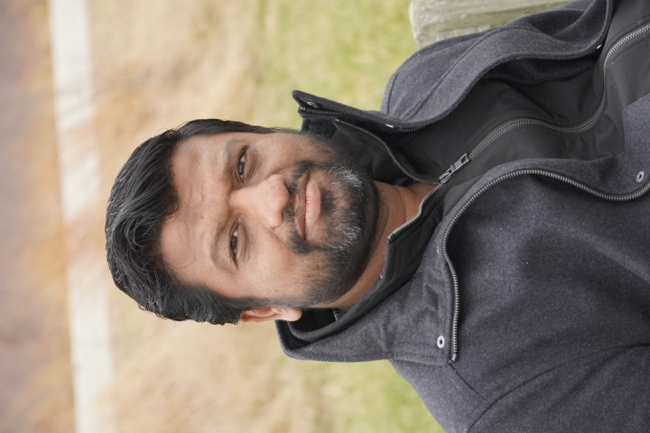

I build adaptive language systems that can update their knowledge, reason consistently as information evolves, and remain reliable after deployment.
I build adaptive language systems that can update their knowledge, reason consistently as information evolves, and remain reliable after deployment.
Hi! I am a postdoctoral researcher at the University of Virginia, working with Prof. Tom Hartvigsen. Before joining UVA, I completed my PhD in Computer Science & Engineering at IIIT Delhi, advised by Prof. Vikram Goyal and Prof. Tanmoy Chakraborty. My research aims to build language systems that learn continuously, incorporate new evidence after deployment, and remain reliable as human knowledge changes.